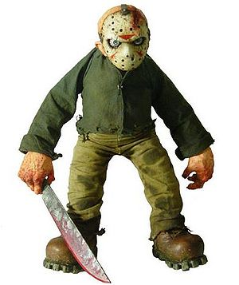

Cosas que no decirle a un profesor
 De: La Frikipedia, la enciclopedia extremadamente seria.
De: La Frikipedia, la enciclopedia extremadamente seria.
Los profesores están en las clases para pegarte aguantarte y puedes decirles muchas cosas sin consecuencias graves (solo castigos, expulsiones, arruinarte tus estudios para pudrirte en la calle etc...) pero diciendo ciertas cosas puedes acabar realmente mal. Es más, diciendo algunas puedes acabar peor que recibiendo una patada giratoria de Chuck Norris(mentira es imposible), pero como los frikipedistas están para apoyarse sobre entre ellos hemos organizado una lista para salvar tu vida:
- ¿De qué nos servirá esto en la vida adulta?
- (En física) ¿Cree usted en la magia?
- Ser profesor parece divertido.
- Para lo que gana, ya podría ser más amable con nosotros.
 Así se queda un profe si le dices una de estas frases
- ¿Cuál es la respuesta a esta pregunta?
- ¿Y si no quiero responder qué?
- Me aburro.
- ¿Se ha visto usted en el espejo? Hay que ser fe@.
- ¿Su marido le quiere?
- -¡Dios! ¡Que tí@ más fe@!
-¡Es mi hij@!
-No me extraña.
- ¿Siempre es usted así de amargad@ o solo en el cole?
- Claro que no he hecho los deberes, ayer echaban pokemon.
- No he estudiado el examen.
- No me venga con suspensos, que l@ rajo.
- ¿Sabe? Voy a repetir curso, estará otro año conmigo.
- Le/a quiero (esta es más peligrosa porque, no solo acabarás en coma, sino que no volverás a tener amigos).
- Me han contado que Zapatero va a retrasar la edad de jubilación a 67 años.
- (En religión) ¿Para qué he de estudiar esto si no creo en Dios?
- Su cara me recuerda a alguien, pero ¿quién?... mm... ¡Ah, si! ¡El increible Hulk!
- ¡Vade retro, Satanás!
- Rrrrrrrrrrrr...zzzzzzzz...
- ¿Puede controlar el tiempo? Porque su clase no acaba nunca.
- ¡¡¡¡PASA EL PORRO!!!!
- Señor, ¿Con lo brillante que ha sido en la escuela, no pudo tener un trabajo mejor que este?
- (Cuando suena el timbre de fin de clase)¡¡¡¡¡POR FIN!!!!! ¡¡¡¡¡YA NO LO SOPORTO MAS!!!!!
- ¿Es una broma, verdad? Cómo
coño quiere que respondamos a esto?
- Señor(a), usted a debido de tener una infancia muy dura, no?
- Le he visto alguna vez en un video pr0n.
- (Para tías, y tíos algo rarillos)PARAD YA DE MIRARME LAS TETAS!!!!!!!!!!
- Vaya mierda, me voy a casa.
- Ya me jodería ser como usted.
Ahora que hemos salvado vuestras vidas, queremos hacer un homenje a nuestro más valeroso colaborador, que probó todas estas frases para asegurarse de sus consecuencias, y se pasaba todos los días diciendo gilipolleces en clase para encontrar otras. Un día... snif... Cuando todos se habían ido, yo estaba mirando la puerta del aula. Empezaron a entrar profesores de todas las asignaturas. Empecé a oir sus gritos... snif... De repente cesaron, y vi salir a todos, pero no a él. Salí corriendo... Snif... Y no lo volví a ver... Snif... 2 minutos de silencio por este amo que dio su vida por ciudad frikipedia.
Autor(es):
- Dark temptation
- Drador
- J1a1v1i1e1r
Frikipedia 2005-2016, Licencia
GFDL 1.2 - Extraído por FrikiLeaks